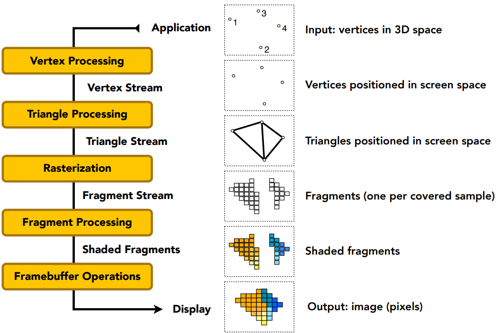

之前在 GAMES101
中粗略提了一点，本文将对这个概念进行详细介绍。
渲染管线通过给定虚拟相机、3D 场景物体以及光源等场景要素来渲染出 2D 的图像。它的功能主要有两个：一是将物体世界坐标转变为屏幕空间坐标，二是为屏幕每个像素点进行着色。
我们依然用 GAMES101 中提到的渲染管线流程来对本文进行章节划分，分别是：
- 几何阶段
- 三角形处理阶段
- 光栅化阶段
- 片元处理阶段
- 输出合成阶段

几何阶段
顶点处理
我们首先要定义世界中的所有几何体。这些物体是由一系列顶点构成的，在这一阶段我们只需要定义所有顶点的世界位置坐标即可。
无论物体怎么变换，点与点之间的连接关系是保持不变的，同时因为每次处理顶点都是独立的，不需要额外考虑其他，对于计算而言更简便，所以进行这一步速度会相当快。
当然除了坐标信息，还可以输入包括顶点颜色、顶点法线、纹理坐标等信息。
接下来还有相机的世界位置坐标。在 3D 渲染中，我们必须要设置一个相机来接收图像，这个相机的视野决定了 GPU 最终会让我们看到什么样的画面。
此时我们就可以根据需要，进行更多顶点相关的操作，比如网格细分、位移贴图、顶点着色（计算光照信息、纹理采样）等。
投影
尽管至此 GPU 已经在三维空间中做了很多工作，但我们最终是要在一个二维的屏幕上查看我们渲染出来的图像，这就需要 GPU 把三维空间映射到二维平面上了。为了方便之后的运算，我们需要进行观测变换与投影变换。这一步是主要是将所有顶点从世界空间映射到相机的「裁剪空间」中，涉及到两个关键的变换矩阵。
由于是左乘矩阵的形式，所以观测变换矩阵先将顶点进行平移，然后执行相机「从末状态到起始状态的逆变换」。其中 \(\mathbf{e}\) 表示相机位置，\(\hat{g}\) 表示相机朝向，\(\hat{t}\) 表示相机上方。
\[ \mathbf{M}_{view} = \left(\begin{matrix} x_{\hat{g}\times\hat{t}} & y_{\hat{g}\times\hat{t}} & z_{\hat{g}\times\hat{t}} & 0\\ x_{\hat{t}} & y_{\hat{t}} & z_{\hat{t}} & 0\\ x_{-\hat{g}} & y_{-\hat{g}} & z_{-\hat{g}} & 0\\ 0 & 0 & 0 & 1 \end{matrix}\right) \left(\begin{matrix} 1 & 0 & 0 & -x_e\\ 0 & 1 & 0 & -y_e\\ 0 & 0 & 1 & -z_e\\ 0 & 0 & 0 & 1 \end{matrix}\right) \]
而透视变换则首先将视锥体进行「squish」，然后平移至原点，最后归一化成单位立方体。
\[ \mathbf{M}_{persp} = \left(\begin{matrix} \frac{2}{r-l} & 0 & 0 & 0\\ 0 & \frac{2}{t-b} & 0 & 0\\ 0 & 0 & \frac{2}{n-f} & 0\\ 0 & 0 & 0 & 1 \end{matrix}\right) \left(\begin{matrix} 1 & 0 & 0 & -\frac{r+l}{2}\\ 0 & 1 & 0 & -\frac{t+b}{2}\\ 0 & 0 & 1 & -\frac{n+f}{2}\\ 0 & 0 & 0 & 1 \end{matrix}\right) \left( \begin{matrix} n & 0 & 0 & 0\\ 0 & n & 0 & 0\\ 0 & 0 & n+f & -nf\\ 0 & 0 & 1 & 0 \end{matrix} \right) \\ \]
这里是右手系下的透视投影变换矩阵，且相机朝 \(z\) 轴负半轴。

映射与裁剪
接下来，我们就需要将立方体中的所有顶点映射到「屏幕空间」中，这一步并不困难，只需要简单地进行缩放+平移即可。所执行的变换矩阵如下所示。
\[ \mathbf{M}_{viewport} \left( \begin{matrix} \frac{width}{2} & 0 & 0 & \frac{width}{2}\\ 0 & \frac{height}{2} & 0 & \frac{height}{2}\\ 0 & 0 & 1 & 0\\ 0 & 0 & 0 & 1 \end{matrix} \right) \\ \]
其中屏幕空间为 \([0, width]*[0, height]\)。超出屏幕空间外的顶点将被剔除，不参与渲染，同时在线段与屏幕空间边界的交点处生成新的顶点——这就是裁剪。
之后所有顶点的 \(x, y\) 坐标就映射到了屏幕空间中，但是还有 \(z\) 的信息呢！之所以保留这个信息，是因为我们还需要利用 \(z\) 来进行物体之间是否存在遮挡的判断。该判断位于光栅化阶段中。
三角形处理阶段
该阶段做的事很简单，即将顶点进行配对，生成点与点之间的关系，进行三角形的设置。
光栅化阶段
这一阶段主要是判断屏幕上的像素对应到屏幕空间中的哪些内容。
采样
我们需要遍历所有三角形（仅使用 \(x, y\) 坐标），判断哪些像素被该三角形包含，这一操作称为采样(Sample)。同一三角形包含的所有像素称为片元(Fragment)。为了降低开销，我们可以用三角形的 AABB 减少需要判断的像素点。

判断一个点 \(O\) 是否落在三角形 \(P_0P_1P_2\) 内很简单，只需要三次叉乘，如果 \(\mathbf{OP_0}\times\mathbf{P_0P_1}, \mathbf{OP_1}\times\mathbf{P_1P_2}, \mathbf{OP_2}\times\mathbf{P_2P_0}\) 同号，则认为在内部，反之在外部。
也可以利用重心坐标来判断是否在三角形内，如果重心坐标的三个值均在 [0,1] 之间，那么就认为这个点在三角形内。
有些像素可能仅仅只有部分含于三角形内部，这就存在锯齿(Jaggies)。抗锯齿技术的目的是使得显示的像素更连续，譬如多重采样抗锯齿(MultiSampling Anti-Aliasing，MSAA)。
片元处理阶段
这是十分重要的阶段，它将根据顶点的信息，通过「插值」的方式为每个片元计算颜色，比如计算每个片元的光照效果（考虑光照模型、材质和光源等因素）；将纹理映射到片元上；甚至直接根据之前生成的顶点的着色信息进行片元着色……。总而言之，这一步的核心在于着色，或者说「计算像素 RGB 值」。对于透射投影，我们需要用到透射校正插值(Perspetive-Correct-Interpolation)来正确插值片段的颜色、纹理等信息。
其实是可以和光栅化合并的。但是为了和 GAMES101 的说法对齐，故单独提取出来。
Z-Buffer
有些像素可能会被多个三角形包含，那就要判断包含该像素的若干三角形谁离相机更近了。还记得我们之前说保留了屏幕空间中所有顶点的 \(z\) 值，接下来通过插值的方式我们可以获取三角形中任意一点的 \(z\) 值。
Z-Buffer 就是用来存每个像素「最接近相机」的 \(z\) 值。对于一个三角形的所有采样点，如果发现某个点 \((x, y, z)\) 对应的深度 \(|z|\) 超过 \(\text{Z-Buffer}(x, y)\)，那么就将其舍弃，反之用该点信息更新 Z-Buffer 以及一个叫帧缓存(Frame Buffer)的玩意。
帧缓存维护所有像素点对应的像素 RGB 值。
这样一来，帧缓存中的像素值就是经过了遮挡判断后的正确的值。
输出合成阶段
完成计算/渲染后，经过各种测试，将缓冲中的像素数据发送到显示设备，即可呈现给用户。
GPU 会使用双重缓冲(Double Buffering)的策略，即屏幕上显示前置缓冲(Front Buffer)，而渲染好的像素值先被送入后置缓冲(Back Buffer)。